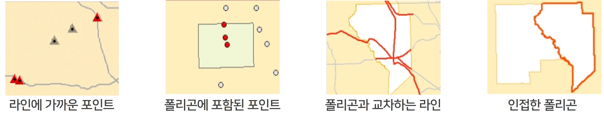
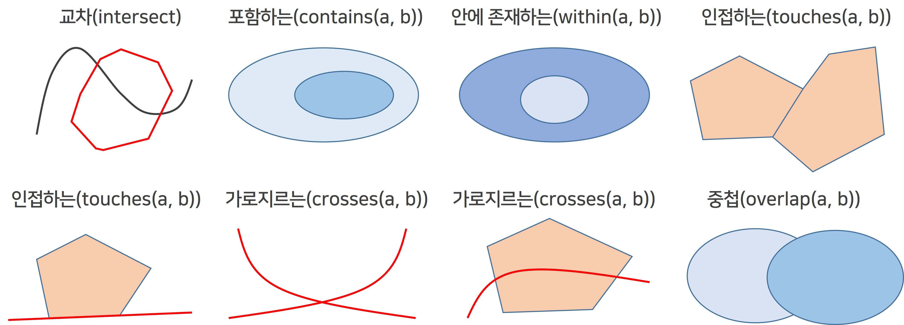
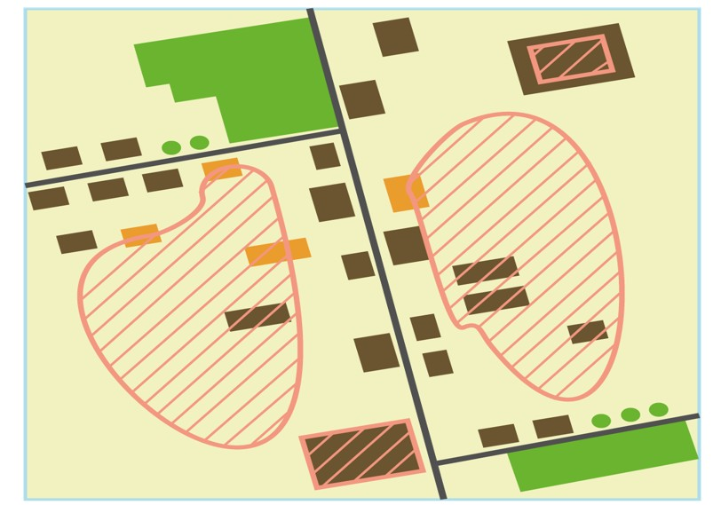
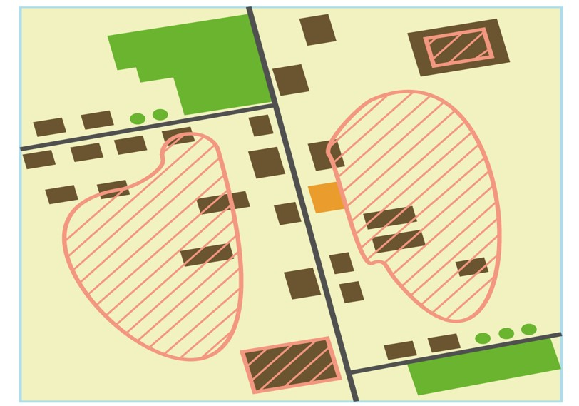
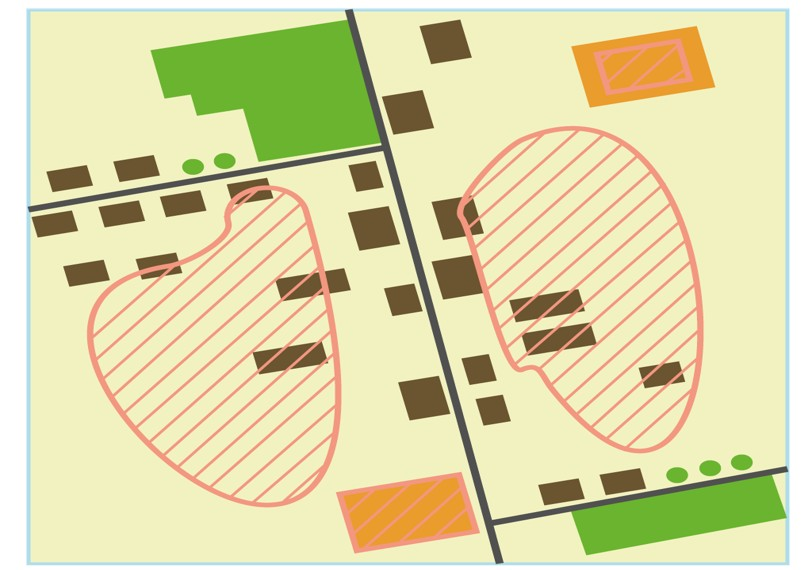

공간관계 함수
1. 공간 데이터 위상
-
공간 데이터 위상의 개념
-
도형 자료에서 서로 연결된 또는 인접한 객체들 사이의 공간적 상호관계(인접성, 연결성, 근접성 등)
-
객체들 간의 위상 관계를 바탕으로 일정 조건을 만족하는 지역이나 조건을 검색, 분석이 가능

-
-
공간질의에 사용되는 기초적인 공간 관계

-
공간 관계 함수의 이해
-
다각형은 건물, 빗금 친 구역은 산사태 발생 지역
-
산사태 발생 지역에 교차되는 건물 개수는?

-
산사태 발생 지역과 중첩되는 건물 개수는?

-
산사태 발생 지역과 맛닿아 있는 건물 개수는?

-
건물에 산사태 발생 지역이 완전히 포함되는 건물 개수는?

-
2. 함수 종류
| 함수 | 한 줄 의미 | 직관 |
|---|---|---|
ST_Intersects(a,b) | 조금이라도 닿거나 겹친다 | 가장 넓은 “관련 있음” |
ST_Disjoint(a,b) | 전혀 만나지 않는다 | Intersects의 반대 |
ST_Contains(a,b) | a가 b를 완전히 포함 | a ⊃ b |
ST_Within(a,b) | a가 b 안에 있다 | a ⊂ b (Contains의 반대 방향) |
ST_Touches(a,b) | 경계만 닿는다(내부는 안 겹침) | 이웃한 필지 |
ST_Overlaps(a,b) | 같은 종류의 도형이 일부만 겹침 | 부분 겹침 |
ST_Crosses(a,b) | 선이 면(또는 선)을 가로지른다 | 도로가 구역을 통과 |
ST_DWithin(a,b,d) | 거리 d 이내에 있다 | “반경 d m 안” |
ST_Buffer(g, d) | g에서 d만큼 확장한 면 | 반경 분석, 영향권 |
✅
ST_Contains(a,b)=ST_Within(b,a): 인자 순서가 바뀐 관계
3. 함수별 사용법
-
QGIS와 병행 실습
- 메뉴에서 벡터 > 조사도구 > 위치로 선택을 실행하여 공간적 위치 관계로 질의 실습
-
다음 위치에서 피처 선택: 선택하고자 하는 객체가 있는 레이어
-
피처 위치: 선택 조건 선택
-
다음과 같은 피처를 비교: 선택 조건으로 비교하고자 하는 대상 레이어
-

- 메뉴에서 벡터 > 조사도구 > 위치로 선택을 실행하여 공간적 위치 관계로 질의 실습
-
💻 ST_Intersects
- 입력 받은 기하 데이터에서 교차하는 객체를 추출
--- 공간관계 함수는 Geometry 형식의 필드를 이용해서 계산 SELECT * FROM yang_building as b, yang_flood as f --- 건물과 침수구역이 조금이라도 닿거나 겹치는 객체 추출 WHERE f.id='1' and ST_Intersects(b.geom, f.geom); -
💻 ST_Disjoint
-
- 입력 받은 기하 데이터에서 연산대상 객체에 **해당하지 않는** 객체를 추출--- 공간관계 함수는 Geometry 형식의 필드를 이용해서 계산 SELECT * FROM yang_building as b, yang_flood as f --- 건물과 침수구역이 전혀 겹치지 않는 객체 추출 WHERE f.id='1' and ST_Disjoint(b.geom, f.geom); -
💻 ST_Contains
- 입력 받은 기하 데이터가 연산대상 객체를 완전히 포함하는 객체를 추출
--- 공간관계 함수는 Geometry 형식의 필드를 이용해서 계산 SELECT * FROM yang_building as b, yang_flood as f --- 건물이 침수구역을 완전히 포함하는 객체 추출 WHERE f.id='1' and ST_Contains(b.geom, f.geom); -
💻 ST_Within
- 입력 받은 기하 데이터가 연산 대상 객체 내에 완벽히 포함되는 객체를 추출
--- 공간관계 함수는 Geometry 형식의 필드를 이용해서 계산 SELECT * FROM yang_building as b, yang_flood as f --- 건물이 침수구역 안에 있는 객체 추출 WHERE f.id='1' and ST_Within(b.geom, f.geom); -
💻 ST_Overlaps
- 입력 받은 기하 데이터에서 연산대상 객체를 포함하는 객체를 추출
--- 공간관계 함수는 Geometry 형식의 필드를 이용해서 계산 SELECT * FROM yang_building as b, yang_flood as f --- 건물과 침수구역이 일추만 겹치는 객체 추출 WHERE f.id='1' and ST_Overlaps(b.geom, f.geom); -
💻 ST_DWithin
- 입력 받은 기하 데이터에서 지정된 거리 내에 있는 객체를 추출
--- 공간관계 함수는 Geometry 형식의 필드를 이용해서 계산 SELECT * FROM yang_building as b, yang_flood as f --- 침수구역에서 500m 이내에 위치한 건물 객체 WHERE f.id='1' and ST_DWithin(b.geom, f.geom, 500); -
💻 ST_Buffer
- 입력 받은 기하 데이터에서 특정 거리 내에 있는 객체를 추출
--- 공간관계 함수는 Geometry 형식의 필드를 이용해서 계산 SELECT * FROM yang_building as b, yang_flood as f --- 침수구역에서 500m 이내에 위치한 건물 객체 WHERE ST_Intersects(b.geom, ST_Buffer(f.geom, 500));
⚠️ 주의
-
점 레이어와 면 레이어는 ST_Within(점, 면) 형태로 사용
-
Within/Contains의 인자 순서를 헷갈리지 말 것
-
관계 함수는 같은 SRID에서만 동작
✏️ 직접 해 봅시다.
- 다음 예제를 보고 어떤 공간관계 함수를 선택해야 할지 차례대로 적어 봅시다.
- 겹치기라도 하나?
- 완전히 안에 있나?
- n미터 이내인가?
- 경계만 닿는 이웃인가?
- 모르겠다
정답
ST_Intersects, ST_Within / ST_Contains, ST_DWithin, ST_Touches, ST_Intersects부터- 여의도동 안에 있는 공원을 찾아봅시다.
- 출력 컬럼: 동이름, 공원명
정답
SELECT d.동이름, p.공원명
FROM dong as d, park as p
WHERE ST_Within(p.geom, d.geom) and d.동이름='여의도동';